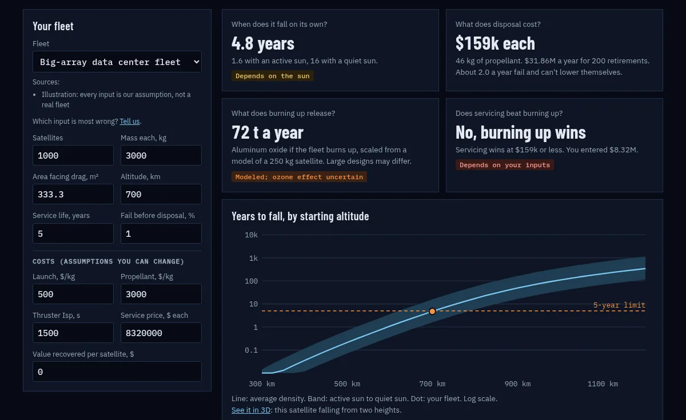

We want to turn retired satellites into data centers in orbit, and recycle the rest.
With their owners' agreement, tugs would bring retired satellites to a station in low orbit. None of that hardware exists yet, so we started with software you can use today.

Where we want this to go
- Start
A retired satellite
Its owner has agreed. Nothing happens without that.
- Move
A tug
A small spacecraft brings it to the station.
- Work
A station in low orbit
Robots service it there.
Then, if it has the power
A data center node
It gets a compute module and goes back out. This fits high-power satellites, if servicing gets about 7 to 10 times cheaper and someone buys the compute.
Otherwise
Recovered parts
Working parts and materials get reused in orbit. We haven't found a buyer for them yet.
Where this really stands
- We haven't asked anyone to pay, and nobody has agreed to.
- At our first estimates, the station costs far more per satellite than the recovered parts are worth.
- The planner is a simple model. No spacecraft engineer has checked it, and we don't have one on the team yet.
- This is a two-founder project at the idea stage. No company has been formed.